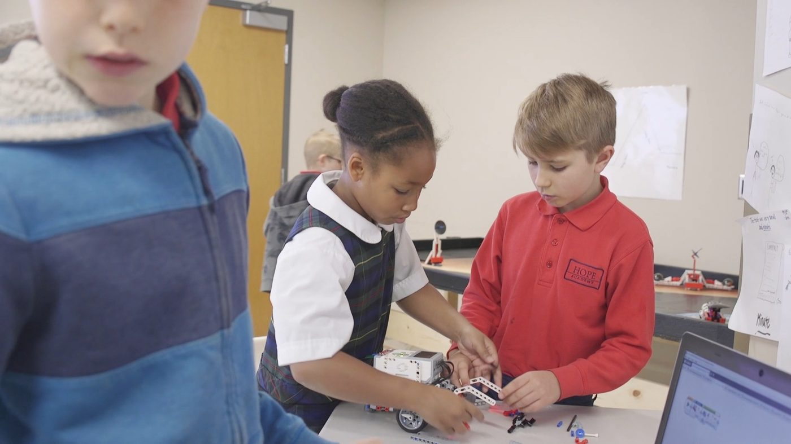
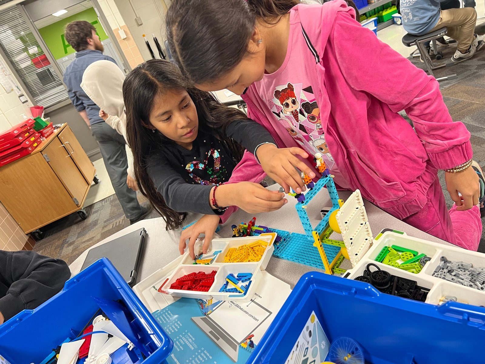
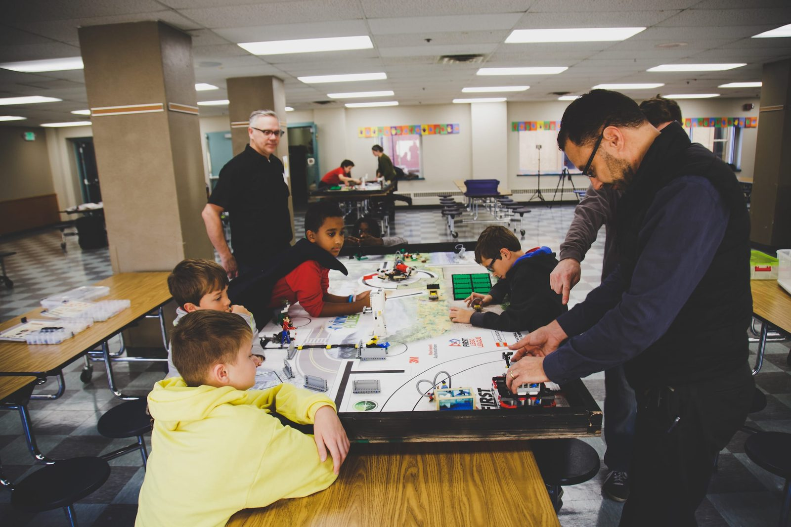
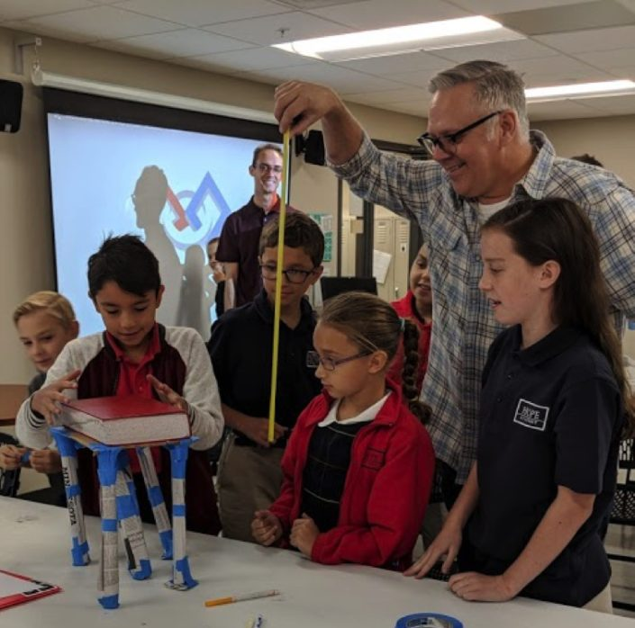
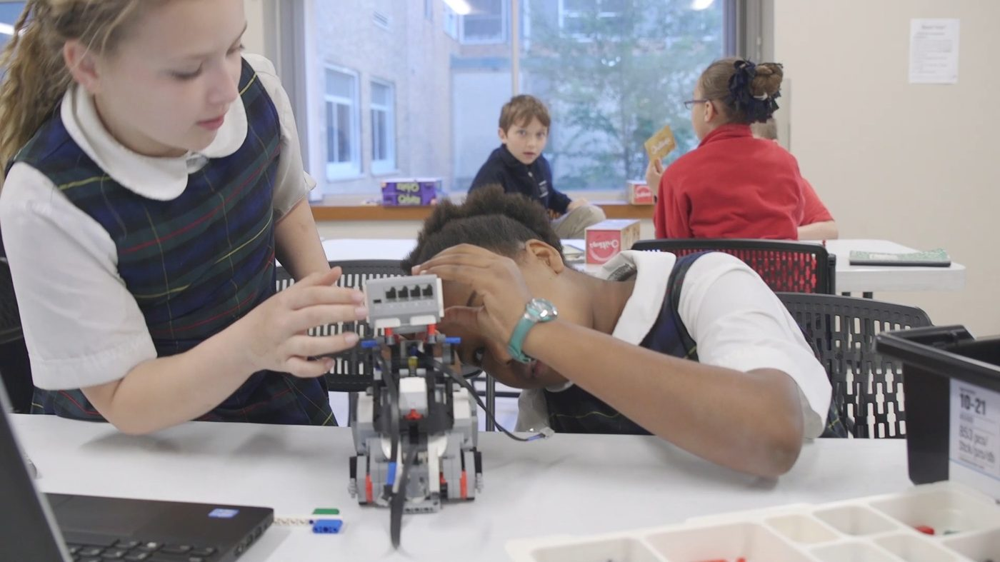
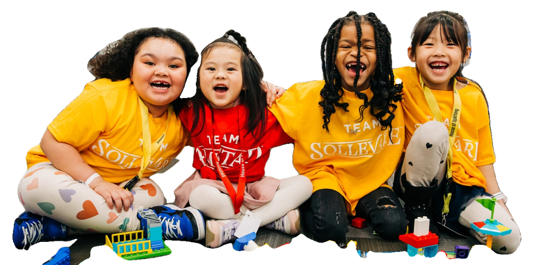
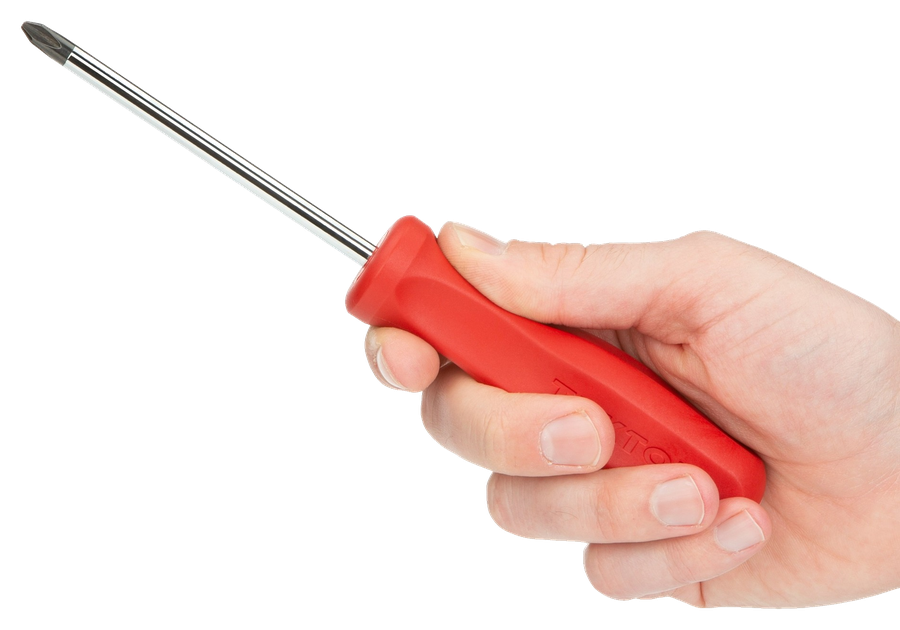
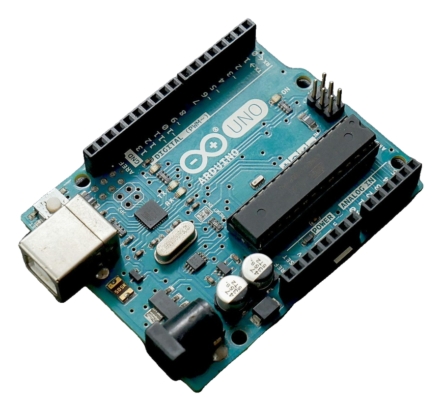

Idea · v0
01
Idea
Every session opens with a short demo and a question. A plan can be a doodle on scrap paper. Then parts go straight into kids' hands.
“what if it rolls downhill by itself?”
createMPLS brings robotics, coding, circuits, 3D printing, sound and flight labs into Minneapolis schools and community sites. Kids sketch it, build it, test it, and make it better. Always free for students and families.

We pack up robots, circuits, code, 3D printers, drones and sound gear and bring them to Minneapolis classrooms, rec centers and community sites. Kids lead. Coaches help. Every student gets real tools in their hands, and it costs students and families nothing.
In-school curriculum during the day. STEM Learning Labs after school and in summer. Your room, your schedule.
No fees for students or families. Partners bring the room and the kids; we bring the kit, the plan and the coaches.
Demos stay short. Build time is protected. Cleanup and explaining your build count as part of the making.
“It comes to us!”
Every createMPLS session runs on one loop: make something real fast, test it, change one thing, explain it, and show it off.

Every session opens with a short demo and a question. A plan can be a doodle on scrap paper. Then parts go straight into kids' hands.
“what if it rolls downhill by itself?”

Small teams, real kits: motors, sensors, LEGO, cardboard, code. Coaches sit beside the team, not in front of it.
build time is protected time

Then they try it. It wobbles, it stalls, it tips over. Good. Now everyone knows what to change.
failing is just data

Change one thing, run it again, explain what happened. Projects end in a share: a show night, a race, a listening party, a gallery walk.
then show the neighborhood
Every program ends with something real a kid can hold, play, fly or show. Pick a grade and a kind of making. Paper sheets are ready to schedule. Sheets still in blueprint are new pilots we're testing now.
Featured: 12 things kids make
Don't see your grade or idea? Ask us. We shape programs with partners.
Sum of yearly student counts, 2019–2023.

Schools, rec centers, libraries and community spaces: tell us your grades, your room and your schedule. We bring the kit, the coaches and the plan.
No engineering degree required. Sit beside a team, ask good questions, and hand over the screwdriver.
Volunteer with us →
Gifts cover the motors, sensors, filament and coach time that keep every lab free for kids.
Give on Givebutter →